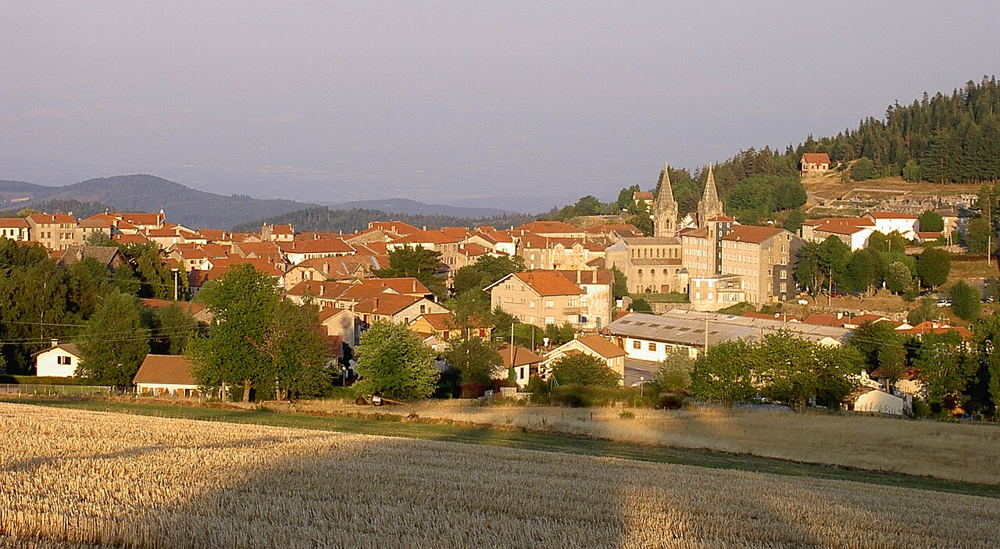

RF · POSTES
⛰
1,30 €
ST-BONNET
28·V·26
43290

THE DECISION · 14 MIN EAST
Drive to Lalouvesc.
Sunday market [48], basilica, an easy ridge walk on the Tour du Mont Chaix (6 km / ~2 h) [13] [57]. The right answer when in doubt.
13.6 km · D532
14 min drive
2–4 h on site
1100 m elevation